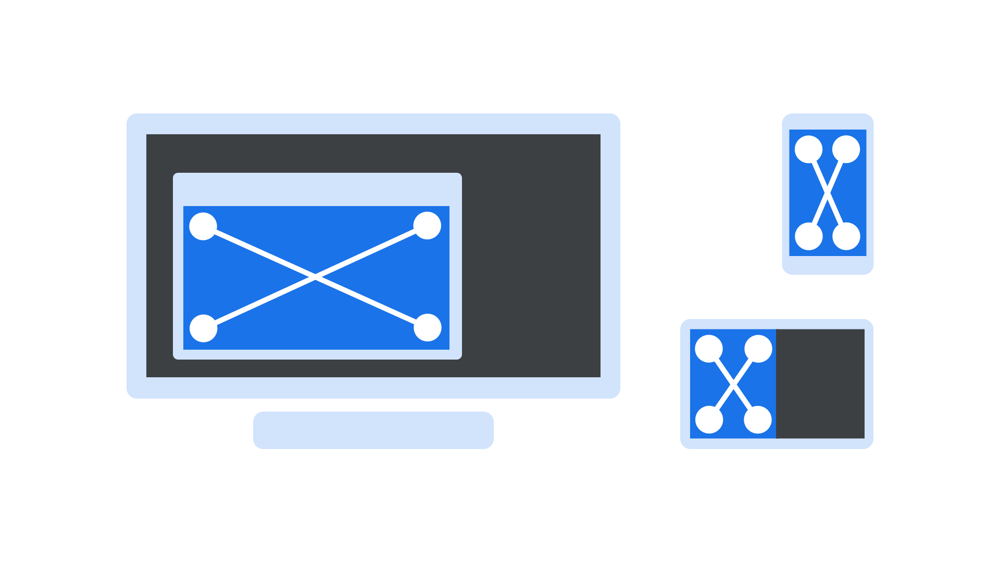

Viewport
By Google Fonts Knowledge contributors · Google Fonts Knowledge.
Original article · Source on GitHub · CC BY-SA 4.0. Text, illustrations and existing credits reproduced from the licensed Knowledge repository. Open Shelf adapted the layout and links; these adaptations are also CC BY-SA 4.0. No endorsement implied.
In responsive design, the viewport usually refers to the size of the browser window, although it can be any area that a website or app uses as its display surface, not including any “chrome” (for instance, tabs, address bar, status bars, etc.).

The viewport size can be the same as the screen size, but only if viewed in full-screen, and only if there’s no other chrome. In most scenarios, the viewport is slightly smaller than the total available screen space.
The horizontal and vertical dimensions of a viewport are more important than the overall screen size of the device, since that would also include any chrome and also assume that the website or app is always interacted with in fullscreen, which is not usually the case.
In CSS, two relatively new units were introduced so that elements can be resized in relation to the viewport’s width and height respectively: vw and vh. For more information, please see the “Viewport-relative units” section in the “Sizing Units” chapter of Learn CSS! These units of measurement are in addition to the control offered by media queries, which allow for specific CSS rules to be applied when viewport size meets certain conditions. For more information, please see the “Media queries” chapter of Learn Responsive Design!